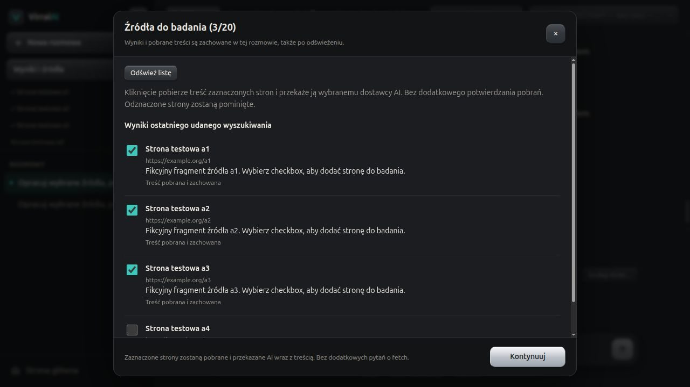

virral-agents
Prywatny czat z wieloma modelami AI na własnym serwerze — z dostępem do sieci tylko za zgodą użytkownika.
02
Problem → rozwiązanie
Problem
Rozmowy z modelami różnych firm są rozrzucone po wielu serwisach i każdy trzyma historię u siebie. Model z dostępem do internetu sam decyduje, co i kiedy pobiera.
Rozwiązanie
Jeden panel na własnym serwerze i z własnymi kluczami: OVH, Z.ai, OpenAI, Anthropic, Gemini, OpenRouter. Wiadomości są szyfrowane w bazie, a wyszukiwanie w sieci idzie przez serwer MCP dopiero po zgodzie na konkretne zapytanie.
03
Zrzuty ekranu


04
Trzy decyzje inżynierskie
- 1Najpierw zgoda, potem internetModel może tylko zaproponować wyszukiwanie. Wykonuje je aplikacja po kliknięciu użytkownika (tryb ASK), więc wiadomo, co i kiedy wyszło do sieci.
- 2Szyfrowanie przed zapisemTreść wiadomości, tytuły, obrazy i e-maile są szyfrowane, tokeny sesji trzymane jako hashe. Wyciek bazy nie odsłania rozmów.
- 3Cienkie kontrolery, logika w serwisachKontroler przyjmuje żądanie i oddaje odpowiedź, autoryzacja jest w middleware, reszta w serwisach. Każdy dostawca AI włącza się kluczem w środowisku.
05
Jakość
Tylko to, co da się sprawdzić.06
Jak pracowałem z AI
Ja
- Wymagania
- Architektura
- Przegląd kodu
- Testy
AI
- Pisanie kodu
Kod pisali głównie agenci AI (Claude Code, OpenCode) według zasad z AGENTS.md: gałąź z develop, testy przed commitem, wpis w CHANGELOG. Każdą zmianę przeglądam i zatwierdzam ja.
07
Stan i co dalej
W rozwoju · przed wydaniem 1.0.0
- Wydanie 1.0.0 i wdrożenie na domowy serwer
- Lepsza ocena jakości źródeł przy badaniu
- Strumieniowanie odpowiedzi modelu (SSE)
Inne projekty